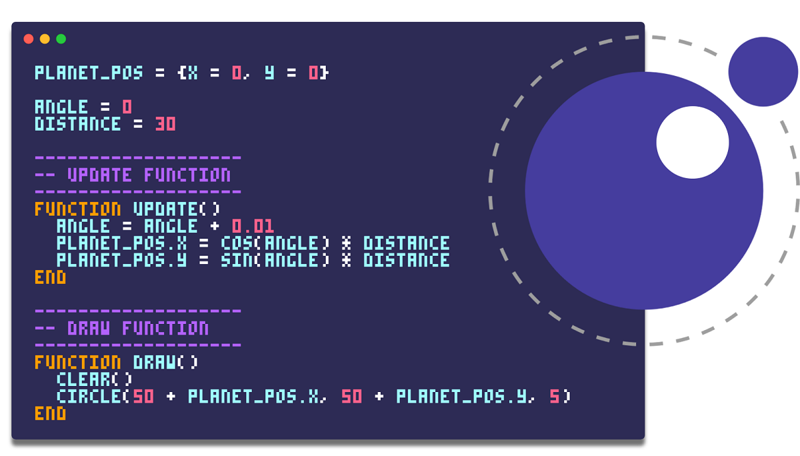

Introducción
Lua es un lenguaje de programación ligero y flexible, diseñado para la extensión de software. En Roblox, Lua es el lenguaje principal utilizado para crear scripts que controlan la jugabilidad, la lógica del juego, y la interacción entre los jugadores y el entorno. Su sintaxis sencilla y la facilidad de integración con el motor de Roblox lo convierten en una herramienta poderosa para desarrolladores de todos los niveles, permitiendo la creación de experiencias de juego dinámicas y personalizadas.
¿Qué es lua?
Lua es un lenguaje de programación ligero y de propósito general, diseñado originalmente en 1993 por un equipo de programadores brasileños: Roberto Ierusalimsky, Luiz Henrique de Figueiredo y Waldemar Celes. Fue creado en el Instituto Tecgraf de la Pontificia Universidad Católica de Río de Janeiro, con el objetivo de proporcionar un lenguaje de scripting embebible en aplicaciones más grandes. Lua se caracteriza por su simplicidad, eficiencia y portabilidad, lo que lo ha convertido en una opción popular para su integración en videojuegos, aplicaciones embebidas, y sistemas donde se requiere un lenguaje extensible y fácil de aprender.
¿Que es ROBLOX?
Roblox es una plataforma en línea que permite a los usuarios crear y compartir experiencias de juego interactivas. Lanzada en 2006, Roblox ofrece un entorno virtual donde los jugadores pueden explorar mundos tridimensionales, participar en juegos multijugador, y socializar con otros usuarios. Lo que hace única a esta plataforma es su sistema de creación de contenido, donde los desarrolladores pueden utilizar el motor de juego de Roblox y el lenguaje de programación Lua para diseñar sus propios juegos y experiencias. Con millones de juegos creados por usuarios, Roblox se ha convertido en una de las plataformas más populares, especialmente entre los jóvenes, fomentando la creatividad y el aprendizaje a través del desarrollo de juegos.

EVOLUCIÓN DE ROBLOX
Inicios de ROBLOX
Los juegos en Roblox comenzaron de manera simple, con gráficos básicos y mecánicas de juego rudimentarias. En sus primeros años, la plataforma se enfocaba en ofrecer a los usuarios un espacio para experimentar con la creación de juegos, utilizando un editor básico y scripts en Lua para agregar interactividad. Los juegos iniciales eran en su mayoría recreaciones de conceptos sencillos, como carreras, simuladores de construcción y minijuegos basados en objetivos. La comunidad de creadores era pequeña pero apasionada, y la plataforma se centraba en permitir que los usuarios expresaran su creatividad, sin grandes expectativas en cuanto a gráficos o complejidad.
ROBLOX actualmente
Hoy en día, los juegos en Roblox han evolucionado significativamente en términos de complejidad, calidad gráfica y mecánicas de juego. La plataforma ha crecido exponencialmente, atrayendo a millones de jugadores y desarrolladores. Con avances en las herramientas de desarrollo, como un motor de física mejorado y capacidades de scripting más sofisticadas, los creadores ahora pueden producir experiencias inmersivas que rivalizan con juegos comerciales. Roblox también ha incorporado elementos sociales y de monetización, permitiendo a los desarrolladores ganar dinero a través de sus creaciones. Esto ha llevado a la creación de juegos masivos y detallados, con gráficos avanzados, mundos abiertos, y una amplia gama de géneros que van desde RPGs complejos hasta simuladores de vida, reflejando la enorme diversidad y profesionalización que ha alcanzado la plataforma.
Conclusion
En resumen, Lua y Roblox son pilares fundamentales en el desarrollo de experiencias interactivas modernas. Lua, con su origen en Brasil como un lenguaje de scripting ligero y flexible, se ha convertido en una herramienta clave para la personalización de software, destacándose en plataformas como Roblox. Por su parte, Roblox ha evolucionado desde sus humildes inicios con juegos simples y gráficos básicos hasta convertirse en una plataforma robusta que alberga complejas y diversas experiencias de juego, creadas por una comunidad global de desarrolladores. Esta evolución refleja no solo la madurez de las herramientas tecnológicas, sino también el crecimiento de una comunidad que utiliza estas herramientas para innovar y crear contenido de calidad.
Enlaces de referencia
- Lua.org. (n.d.). About Lua. Lua.
- Wikipedia. (n.d.). Lua (programming language). Wikipedia.
- Roblox Corporation. (n.d.). Roblox. Roblox.
- Roblox Corporation. (n.d.). History Archives. Roblox Blog.